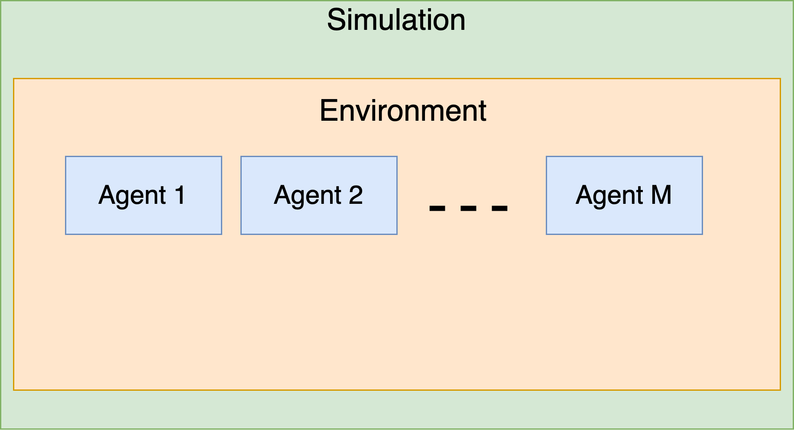
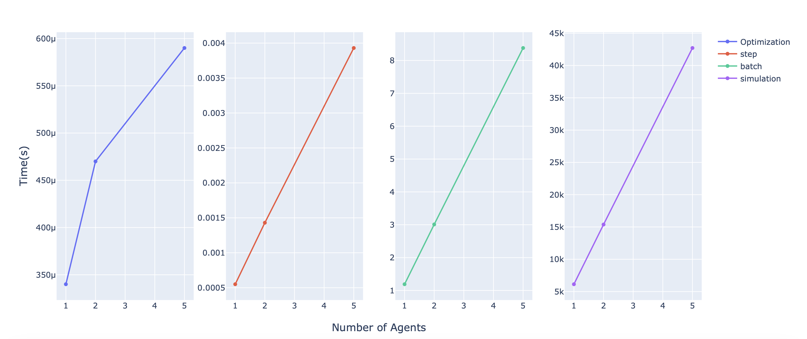

API
SPAM-DFBA is implemented in Python. As of now, this library comes with two modules: toymodel.py and toolkit.py
toymodel.py includes toy examples used in the paper and it is mainly created for testing and playing with the algorithm. Most of the case studies import models from this module.
Toolkit on the other hand, provides all the required functionalities to run the RL simulations. You can simply create new cases that suit your purpose.
We first explain the toolkit module and then will explain how we can build an agent and an environment using the toy models that already exist in the toymodel module.
toolkit
toolkit module offers a modular and hierarchical design:
1- First we need to define all the agents. Each agent is an instance of Agent class
2- An environment is defined by feeding the agents and providing some characteristics for the simulation environment. An environment object is instantiated from the Environment class
3- After defining the environment, we feed the environment object into a Simulation instance. This simulation instance decides on high-level variables such as where to save the files and plotting the results or obtaining the simulation times. The following figure describes the order of operation:

Agent
An object of this class defines an agent in the environment. At the core of an agent lies a COBRA model. Also the observable environment states are needed to be defined for an agent. Additionally, it should be defined what reactions an agent have control over.
Parameters:
| Name | Type | Description | Default |
|---|---|---|---|
name |
str
|
A descriptive name given to an agent. |
required |
model |
cobra.Model
|
A cobra model describing the metabolism of the agent. |
required |
actor_network |
NN
|
The neural network class, pyTorch, to be used for the actor network. |
required |
critic_network |
NN
|
The neural network class, pyTorch, to be used for the critic network. |
required |
optimizer_critic |
torch.optim.Adam
|
The Adam optimizer class used for tuning the critic network parameters. |
required |
optimizer_actor |
torch.optim.Adam
|
The Adam optimizer class used for tuning the actor network parameters. |
required |
actions |
list
|
list of reaction names that the agent has control over. The reactions should exist in the cobra model. |
required |
observables |
list
|
list of the names of metabolites that the agents can sense from the environment. |
required |
clip |
float
|
gradient clipping threshhold that is used in PPO algorithm |
0.01
|
actor_var |
float
|
Amount of variance in the actor network suggestions. For exploration purpose. |
0.1
|
grad_updates |
int
|
How many steps of gradient decent is performed in each training step |
1
|
lr_actor |
float)
|
The learning rate for the actor network |
0.001
|
lr_critic |
float)
|
The learning rate for the critic network |
0.001
|
Examples:
>>> from spamdfba import toymodels as tm
>>> from spamdfba import toolkit as tk
>>> agent1=tk.Agent("agent1",
model=tm.ToyModel_SA.copy(),
actor_network=tk.NN,
critic_network=tk.NN,
clip=0.1,
lr_actor=0.0001,
lr_critic=0.001,
grad_updates=4,
optimizer_actor=torch.optim.Adam,
optimizer_critic=torch.optim.Adam,
observables=['agent1','agent2' ,'Glc', 'Starch'],
actions=["Amylase_e"],
gamma=1,
)
Source code in spamdfba/toolkit.py
57 58 59 60 61 62 63 64 65 66 67 68 69 70 71 72 73 74 75 76 77 78 79 80 81 82 83 84 85 86 87 88 89 90 91 92 93 94 95 96 97 98 99 100 101 102 103 104 105 106 107 108 109 110 111 112 113 114 115 116 117 118 119 120 121 122 123 124 125 126 127 128 129 130 131 132 133 134 135 136 137 138 139 140 141 142 143 144 145 146 147 148 149 150 151 152 153 154 155 156 157 158 159 160 161 162 163 164 165 166 167 168 169 170 171 | |
compute_rtgs(batch_rews)
Given a batch of rewards , it calculates the discouted return for each state for that batch
Source code in spamdfba/toolkit.py
157 158 159 160 161 162 163 164 165 166 167 168 169 170 171 | |
evaluate(batch_obs, batch_acts)
Calculates the value of the states, as well as the log probability af the actions that are taken. The derivatives are calculated here.
Source code in spamdfba/toolkit.py
144 145 146 147 148 149 150 151 152 153 154 155 | |
get_actions(observation)
This method will draw the actions from a normal distribution around the actor netwrok prediction. The derivatives are not calculated here.
Source code in spamdfba/toolkit.py
132 133 134 135 136 137 138 139 140 141 142 | |
Environment
An environment is a collection of the following: Agents: a list of objects of class Agent, defined below. extracellular reactions: a list of dictionaries that describes reaction that happens outside of cells. An example of such reactins is reactions catalyzed by extracellular enzymes. This list should look like this: [{"reaction":{ "a":1, "b":-1, "c":1 }, "kinetics": (lambda x,y: x*y,("a","b")),))},...]
Parameters:
| Name | Type | Description | Default |
|---|---|---|---|
name |
str
|
A descriptive name for the environment |
required |
agents |
Iterable
|
An iterable object like list or tuple including the collection of the agents to be used in the environment. |
required |
extracellular_reactions |
Iterable
|
An iterable object consisting of a collection of extracellular reactions defined as above. |
required |
initial_condition |
dict
|
A dictionary describing the initial concentration of all species in the environment to be used in the beginning |
required |
inlet_conditions |
dict
|
A dictionary describing the inlet concentration of all species in the environment to be used in the beginning |
required |
number_of_batches |
int
|
Determines how many batches are performed in a simulation |
100
|
dt |
float
|
Specifies the time step for DFBA calculations |
0.1
|
dilution_rate |
float
|
The dilution rate of the bioreactor in per hour unit. |
0.05
|
episodes_per_batch |
int
|
Determines how many episodes should be executed with same actor function in parallel (policy evaluation) |
10
|
episode_length |
int
|
Determines how many time points exists within a given episode. |
1000
|
training |
bool
|
Whether to run in training mode. If false, no training happens. |
True
|
constant |
list
|
A list of components that we want to hold their concentration constant during the simulations. |
[]
|
Examples:
>>> from spamdfba import toymodels as tm
>>> from spamdfba import toolkit as tk
>>> agent1=tk.Agent("agent1",
model=tm.ToyModel_SA.copy(),
actor_network=tk.NN,
critic_network=tk.NN,
clip=0.1,
lr_actor=0.0001,
lr_critic=0.001,
grad_updates=4,
optimizer_actor=torch.optim.Adam,
optimizer_critic=torch.optim.Adam,
observables=['agent1','agent2' ,'Glc', 'Starch'],
actions=["Amylase_e"],
gamma=1,
)
>>> agent2=tk.Agent("agent2",
model=tm.ToyModel_SA.copy(),
actor_network=tk.NN,
critic_network=tk.NN,
clip=0.1,
lr_actor=0.0001,
lr_critic=0.001,
grad_updates=4,
optimizer_actor=torch.optim.Adam,
optimizer_critic=torch.optim.Adam,
observables=['agent1','agent2', 'Glc', 'Starch'],
actions=["Amylase_e"],
gamma=1,
)
>>> agents=[agent1,agent2]
>>> env=tk.Environment(name="Toy-Exoenzyme-Two-agents",
agents=agents,
dilution_rate=0.0001,
initial_condition={"Glc":100,"agent1":0.1,"agent2":0.1,"Starch":10},
inlet_conditions={"Starch":10},
extracellular_reactions=[{"reaction":{
"Glc":10,
"Starch":-0.1,},
"kinetics": (tk.general_kinetic,("Glc","Amylase"))}],
dt=0.1,
number_of_batches=1000,
episodes_per_batch=int(NUM_CORES/2),
)
Source code in spamdfba/toolkit.py
175 176 177 178 179 180 181 182 183 184 185 186 187 188 189 190 191 192 193 194 195 196 197 198 199 200 201 202 203 204 205 206 207 208 209 210 211 212 213 214 215 216 217 218 219 220 221 222 223 224 225 226 227 228 229 230 231 232 233 234 235 236 237 238 239 240 241 242 243 244 245 246 247 248 249 250 251 252 253 254 255 256 257 258 259 260 261 262 263 264 265 266 267 268 269 270 271 272 273 274 275 276 277 278 279 280 281 282 283 284 285 286 287 288 289 290 291 292 293 294 295 296 297 298 299 300 301 302 303 304 305 306 307 308 309 310 311 312 313 314 315 316 317 318 319 320 321 322 323 324 325 326 327 328 329 330 331 332 333 334 335 336 337 338 339 340 341 342 343 344 345 346 347 348 349 350 351 352 353 354 355 356 357 358 359 360 361 362 363 364 365 366 367 368 369 370 371 372 373 374 375 376 377 378 379 380 381 382 383 384 385 386 387 388 389 390 391 392 393 394 395 396 397 398 399 400 401 402 403 404 405 406 407 | |
extract_species()
Determines the extracellular species in the community before extracellula reactions.
Source code in spamdfba/toolkit.py
305 306 307 308 309 | |
reset()
Resets the environment to its initial state.
Source code in spamdfba/toolkit.py
326 327 328 329 330 331 332 333 334 | |
resolve_exchanges()
Determines the exchange reaction mapping for the community. This mapping is required to keep track of Metabolite pool change by relating exctacellular concentrations with production or consumption by the agents.
Source code in spamdfba/toolkit.py
299 300 301 302 303 | |
resolve_extracellular_reactions(extracellular_reactions)
Determines the extracellular reactions for the community. This method adds any new compounds required to run DFBA to the system.
Parameters:
| Name | Type | Description | Default |
|---|---|---|---|
extracellular_reactions |
list[dict]
|
list of extracellular reactions as defined in the constructor. |
required |
Source code in spamdfba/toolkit.py
311 312 313 314 315 316 317 318 319 320 321 322 | |
set_networks()
Sets up the networks and optimizers for the agents in the environment.
Source code in spamdfba/toolkit.py
400 401 402 403 404 405 406 407 | |
set_observables()
Sets the observables for the agents in the environment.
Source code in spamdfba/toolkit.py
395 396 397 398 | |
step()
Performs a single DFBA step in the environment. This method provides similar interface as other RL libraries: It returns: current state, rewards given to each agent from FBA calculations, actions each agent took, and next state calculated similar to DFBA.
Source code in spamdfba/toolkit.py
336 337 338 339 340 341 342 343 344 345 346 347 348 349 350 351 352 353 354 355 356 357 358 359 360 361 362 363 364 365 366 367 368 369 370 371 372 373 374 375 376 377 378 379 380 381 382 383 384 385 386 387 388 389 390 391 392 | |
NN
Bases: nn.Module
This class is a subclass of nn.Module and is a general class for defining function approximators in the RL problems.
Parameters:
| Name | Type | Description | Default |
|---|---|---|---|
input_dim |
int
|
dimension of the input, states, tensor. |
required |
output_dim |
int
|
dimension of the output tensor. |
required |
hidden_dim |
int
|
dimension of each hidden layer, defults to 20. |
20
|
activation |
Type of the activation layer. Usually nn.Relu or nn.Tanh. |
nn.ReLU
|
|
n_hidden |
int
|
number of hidden layers in the neural network. |
8
|
Source code in spamdfba/toolkit.py
33 34 35 36 37 38 39 40 41 42 43 44 45 46 47 48 49 50 51 52 53 54 55 | |
Simulation
This class is designed to run the final simulation for an environment and additionaly does: - Saving the results given a specific interval - Plotting the results - calculating the duration of different parts of the code. This class can be extended easily later for added functionalities such as online streaming the training results.
Parameters:
| Name | Type | Description | Default |
|---|---|---|---|
name |
str
|
A descriptive name given to the simulation. This name is used to save the training files. |
required |
env |
environment
|
The environment to perform the simulations in. |
required |
save_dir |
str
|
The DIRECTORY to which you want to save the training results |
required |
overwrite |
bool
|
Determines whether to overwrite the pickel in each saving interval create new files |
False
|
report |
dict
|
Includes the reported time at each step |
required |
Source code in spamdfba/toolkit.py
540 541 542 543 544 545 546 547 548 549 550 551 552 553 554 555 556 557 558 559 560 561 562 563 564 565 566 567 568 569 570 571 572 573 574 575 576 577 578 579 580 581 582 583 584 585 586 587 588 589 590 591 592 593 594 595 596 597 598 599 600 601 602 603 604 605 606 607 608 609 610 611 612 613 614 615 616 617 618 619 620 621 622 623 624 625 626 627 628 629 630 631 632 633 634 635 636 637 638 639 640 641 642 643 644 645 646 647 648 649 650 651 652 653 654 655 656 657 658 659 660 661 662 663 664 665 666 667 668 669 670 671 672 673 674 675 676 677 678 679 680 681 682 683 684 685 686 687 688 689 690 691 692 693 694 695 696 697 698 699 700 701 702 703 704 705 706 707 708 709 710 711 712 713 714 715 716 717 | |
plot_learning_curves(plot=True)
This method plots the learning curve for all the agents.
Parameters:
| Name | Type | Description | Default |
|---|---|---|---|
plot |
bool
|
whether to render the plot as well |
True
|
Returns:
| Type | Description |
|---|---|
go.Figure
|
go.Figure : Returns a plotly figure for learning curves of the agents. |
Source code in spamdfba/toolkit.py
653 654 655 656 657 658 659 660 661 662 663 664 665 666 667 668 669 670 671 672 673 674 675 676 677 678 679 680 681 682 683 684 685 686 687 688 689 690 691 692 693 | |
print_training_times(draw_table=True)
Returns a dictionary describing the simulation time at different level of the training process. You can also opt to draw a table based on this results using Rich library.
Parameters:
| Name | Type | Description | Default |
|---|---|---|---|
draw_table |
bool
|
whether to draw the table in the console |
True
|
Returns:
| Name | Type | Description |
|---|---|---|
dict |
list[dict]
|
A list of dictionaries that contain duration of execution for different stages of simulation |
Source code in spamdfba/toolkit.py
695 696 697 698 699 700 701 702 703 704 705 706 707 708 709 710 711 712 713 714 715 716 717 | |
run(solver='glpk', verbose=True, initial_critic_error=100)
This method runs the training loop
Parameters:
| Name | Type | Description | Default |
|---|---|---|---|
solver |
str
|
The solver to be used by cobrapy |
'glpk'
|
verbose |
bool
|
whether to print the training results after each iteration |
True
|
initial_critic_error |
float
|
To make the training faster this method first trains the critic network on the first batch of episodes to |
100
|
Returns:
| Name | Type | Description |
|---|---|---|
Environment |
Environment
|
The trained version of the environment. |
Source code in spamdfba/toolkit.py
564 565 566 567 568 569 570 571 572 573 574 575 576 577 578 579 580 581 582 583 584 585 586 587 588 589 590 591 592 593 594 595 596 597 598 599 600 601 602 603 604 605 606 607 608 609 610 611 612 613 614 615 616 617 618 619 620 621 622 623 624 625 626 627 628 629 630 631 632 633 634 635 636 637 638 639 640 641 642 643 644 645 646 647 648 649 650 651 | |
Build_Mapping_Matrix(models)
Given a list of COBRA model objects, this function will build a mapping matrix for all the exchange reactions.
Source code in spamdfba/toolkit.py
411 412 413 414 415 416 417 418 419 420 421 422 423 424 425 426 | |
general_kinetic(x, y)
A simple function implementing MM kinetics
Source code in spamdfba/toolkit.py
430 431 432 | |
general_uptake(c)
An extremely simple function for mass transfer kinetic. Only used for testing
Source code in spamdfba/toolkit.py
433 434 435 | |
mass_transfer(x, y, k=0.01)
A simple function for mass transfer kinetic
Source code in spamdfba/toolkit.py
437 438 439 | |
rollout(env)
Performs a batch calculation in parallel using Ray library.
Parameters:
| Name | Type | Description | Default |
|---|---|---|---|
env |
Environment
|
The environment instance to run the episodes for |
required |
Source code in spamdfba/toolkit.py
441 442 443 444 445 446 447 448 449 450 451 452 453 454 455 456 457 458 459 460 461 462 463 464 465 466 467 468 469 470 471 472 473 474 475 476 477 478 479 480 481 482 483 484 | |
run_episode(env)
Runs a single episode of the environment used for parallel computatuon of episodes.
Source code in spamdfba/toolkit.py
486 487 488 489 490 491 492 493 494 495 496 497 498 499 500 501 502 503 504 505 506 507 508 509 510 511 512 513 514 | |
run_episode_single(env)
Runs a single episode of the environment.
Source code in spamdfba/toolkit.py
516 517 518 519 520 521 522 523 524 525 526 527 528 529 530 531 532 533 534 535 536 537 | |
toymodel
This module includes all the predefined cobra models that are used in the case studies
from cobra import Model, Reaction, Metabolite
import cobra
import numpy as np
"""
A Toy Model is a Cobra Model with the following:
Toy_Model_SA
Reactions(NOT BALANCED):
-> S Substrate uptake
S + ADP -> S_x + ATP ATP production from catabolism
ATP -> ADP ATP maintenance
S_x + ATP -> X + ADP Biomass production
S_x + ATP -> Amylase + ADP Amylase production
Amylase -> Amylase Exchange
X -> Biomass Out
S_x + ADP -> P + ATP Metabolism stuff!
P -> Product release
Metabolites:
P Product
S Substrate
S_x Internal metabolite
X Biomass
ADP
ATP
Amylase
-----------------------------------------------------------------------
Toy_Model_NE_Aux_1:
EX_S_sp1: S -> lowerBound',-10,'upperBound',0
EX_A_sp1: A -> lowerBound',-100,'upperBound',100
EX_B_sp1: B -> lowerBound',-100,'upperBound',100
EX_P_sp1: P-> lowerBound',0,'upperBound',100
R_1_sp1: S + 2 adp -> P + 2 atp ,'lowerBound',0,'upperBound',Inf
R_2_sp1: P + atp -> B + adp 'lowerBound',0,'upperBound',Inf
R_3_sp1: P + 3 atp -> A + 3 adp ,'lowerBound',0,'upperBound',Inf
R_4_sp1: 'atp -> adp lowerBound',0,'upperBound',Inf
OBJ_sp1: 3 A + 3 B + 5 atp -> 5 adp + biomass_sp1 lowerBound',0,'upperBound',Inf
Biomass_1 biomass_sp1 -> ','lowerBound',0,'upperBound',Inf,'objectiveCoef', 1);
Toy_Model_NE_Aux_2:
EX_S_sp1: S -> lowerBound',-10,'upperBound',0
EX_A_sp1: A -> lowerBound',-100,'upperBound',100
EX_B_sp1: B -> lowerBound',-100,'upperBound',100
EX_P_sp1: P-> lowerBound',0,'upperBound',100
R_1_sp1: S + 2 adp -> P + 2 atp ,'lowerBound',0,'upperBound',Inf
R_2_sp1: P + atp -> B + adp 'lowerBound',0,'upperBound',Inf
R_3_sp1: P + 3 atp -> A + 3 adp ,'lowerBound',0,'upperBound',Inf
R_4_sp1: 'atp -> adp lowerBound',0,'upperBound',Inf
OBJ_sp1: 3 A + 3 B + 5 atp -> 5 adp + biomass_sp1 lowerBound',0,'upperBound',Inf
Biomass_1 biomass_sp1 -> ','lowerBound',0,'upperBound',Inf,'objectiveCoef', 1);
"""
ToyModel_SA = Model('Toy_Model')
### S_Uptake ###
S_Uptake = Reaction('Glc_e')
S = Metabolite('Glc', compartment='c')
S_Uptake.add_metabolites({S: -1})
S_Uptake.lower_bound = -20
S_Uptake.upper_bound = 0
ToyModel_SA.add_reactions([S_Uptake])
### ADP Production From Catabolism ###
ATP_Cat = Reaction('ATP_Cat')
ADP = Metabolite('ADP', compartment='c')
ATP = Metabolite('ATP', compartment='c')
S_x = Metabolite('S_x', compartment='c')
ATP_Cat.add_metabolites({ADP: -1, S: -1, S_x: 1, ATP: 1})
ATP_Cat.lower_bound = 0
ATP_Cat.upper_bound = 1000
ToyModel_SA.add_reactions([ATP_Cat])
### ATP Maintenance ###
ATP_M = Reaction('ATP_M')
ATP_M.add_metabolites({ATP: -1, ADP: 1})
ATP_M.lower_bound = 1
ATP_M.upper_bound = 100
ToyModel_SA.add_reactions([ATP_M])
### Biomass Production ###
X = Metabolite('X', compartment='c')
X_Production = Reaction('X_Production')
X_Production.add_metabolites({S_x: -1, ATP: -100, ADP: 100, X: 1})
X_Production.lower_bound = 0
X_Production.upper_bound = 1000
ToyModel_SA.add_reactions([X_Production])
### Biomass Release ###
X_Release = Reaction('X_Ex')
X_Release.add_metabolites({X: -1})
X_Release.lower_bound = 0
X_Release.upper_bound = 1000
ToyModel_SA.add_reactions([X_Release])
### Metabolism stuff ###
P = Metabolite('P', compartment='c')
P_Prod = Reaction('P_Prod')
P_Prod.add_metabolites({S_x: -1, ATP: 1, ADP: -1, P: 0.1})
P_Prod.lower_bound = 0
P_Prod.upper_bound = 1000
ToyModel_SA.add_reactions([P_Prod])
### Product Release ###
P_out = Reaction('P_e')
P_out.add_metabolites({P: -1})
P_out.lower_bound = 0
P_out.upper_bound = 1000
ToyModel_SA.add_reactions([P_out])
ToyModel_SA.objective = 'X_Ex'
### Amylase Production ###
Amylase_Prod = Reaction('Amylase_Prod')
Amylase = Metabolite('Amylase', compartment='c')
Amylase_Prod.add_metabolites({S_x: -1, ATP: -1, ADP: 1, Amylase: 0.1})
Amylase_Prod.lower_bound = 0
Amylase_Prod.upper_bound = 1000
ToyModel_SA.add_reactions([Amylase_Prod])
### Amylase Exchange ###
Amylase_Ex = Reaction('Amylase_e')
Amylase_Ex.add_metabolites({Amylase: -1})
Amylase_Ex.lower_bound = 0
Amylase_Ex.upper_bound = 1000
ToyModel_SA.add_reactions([Amylase_Ex])
ToyModel_SA.biomass_ind=4
ToyModel_SA.exchange_reactions=tuple([ToyModel_SA.reactions.index(i) for i in ToyModel_SA.exchanges])
#########################################################
#########################################################
### S_Uptake ###
Toy_Model_NE_Aux_1 = Model('Toy_1_Aux')
EX_S_sp1 = Reaction('S_e')
S = Metabolite('S', compartment='c')
EX_S_sp1.add_metabolites({S: -1})
EX_S_sp1.lower_bound = -10
EX_S_sp1.upper_bound = 0
Toy_Model_NE_Aux_1.add_reactions([EX_S_sp1])
EX_A_sp1 = Reaction('A_e')
A = Metabolite('A', compartment='c')
EX_A_sp1.add_metabolites({A: -1})
EX_A_sp1.lower_bound = -100
EX_A_sp1.upper_bound = 100
Toy_Model_NE_Aux_1.add_reactions([EX_A_sp1])
EX_B_sp1 = Reaction('B_e')
B = Metabolite('B', compartment='c')
EX_B_sp1.add_metabolites({B: -1})
EX_B_sp1.lower_bound = -100
EX_B_sp1.upper_bound = 100
Toy_Model_NE_Aux_1.add_reactions([EX_B_sp1])
EX_P_sp1 = Reaction('P_e')
P = Metabolite('P', compartment='c')
EX_P_sp1.add_metabolites({P:-1})
EX_P_sp1.lower_bound = 0
EX_P_sp1.upper_bound = 100
Toy_Model_NE_Aux_1.add_reactions([EX_P_sp1])
R_1_sp1 = Reaction('R_1_sp1')
ADP = Metabolite('ADP', compartment='c')
ATP = Metabolite('ATP', compartment='c')
R_1_sp1.add_metabolites({ADP: -2, S: -1, P: 1, ATP: 2})
R_1_sp1.lower_bound = 0
R_1_sp1.upper_bound = 1000
Toy_Model_NE_Aux_1.add_reactions([R_1_sp1])
R_2_sp1 = Reaction('R_2_sp1')
R_2_sp1.add_metabolites({ADP: 1, P: -1, B: 3, ATP: -1})
R_2_sp1.lower_bound = 0
R_2_sp1.upper_bound = 1000
Toy_Model_NE_Aux_1.add_reactions([R_2_sp1])
# R_3_sp1 = Reaction('R_3_sp1')
# R_3_sp1.add_metabolites({ADP: 3, P: -1, A: 1, ATP: -3})
# R_3_sp1.lower_bound = 0
# R_3_sp1.upper_bound = 1000
# Toy_Model_NE_Aux_1.add_reactions([R_3_sp1])
R_4_sp1 = Reaction('R_4_sp1')
R_4_sp1.add_metabolites({ADP:1 ,ATP: -1})
R_4_sp1.lower_bound = 0
R_4_sp1.upper_bound = 1000
Toy_Model_NE_Aux_1.add_reactions([R_4_sp1])
OBJ_sp1 = Reaction("OBJ_sp1")
biomass_sp1 = Metabolite('biomass_sp1', compartment='c')
OBJ_sp1.add_metabolites({ADP:5 ,ATP: -5,biomass_sp1:0.1,A:-5,B:-5})
OBJ_sp1.lower_bound = 0
OBJ_sp1.upper_bound = 1000
Toy_Model_NE_Aux_1.add_reactions([OBJ_sp1])
Biomass_1 = Reaction("Biomass_1")
Biomass_1.add_metabolites({biomass_sp1:-1})
Biomass_1.lower_bound = 0
Biomass_1.upper_bound = 1000
Toy_Model_NE_Aux_1.add_reactions([Biomass_1])
Toy_Model_NE_Aux_1.objective='Biomass_1'
Toy_Model_NE_Aux_1.biomass_ind=8
Toy_Model_NE_Aux_1.exchange_reactions=tuple([Toy_Model_NE_Aux_1.reactions.index(i) for i in Toy_Model_NE_Aux_1.exchanges])
### ADP Production From Catabolism ###
Toy_Model_NE_Aux_2 = Model('Toy_2_Aux')
### S_Uptake ###
EX_S_sp2 = Reaction('S_e')
S = Metabolite('S', compartment='c')
EX_S_sp2.add_metabolites({S: -1})
EX_S_sp2.lower_bound = -10
EX_S_sp2.upper_bound = 0
Toy_Model_NE_Aux_2.add_reactions([EX_S_sp2])
EX_A_sp2 = Reaction('A_e')
A = Metabolite('A', compartment='c')
EX_A_sp2.add_metabolites({A: -1})
EX_A_sp2.lower_bound = -100
EX_A_sp2.upper_bound = 100
Toy_Model_NE_Aux_2.add_reactions([EX_A_sp2])
EX_B_sp2 = Reaction('B_e')
B = Metabolite('B', compartment='c')
EX_B_sp2.add_metabolites({B: -1})
EX_B_sp2.lower_bound = -100
EX_B_sp2.upper_bound = 100
Toy_Model_NE_Aux_2.add_reactions([EX_B_sp2])
EX_P_sp2 = Reaction('P_e')
P = Metabolite('P', compartment='c')
EX_P_sp2.add_metabolites({P:-1})
EX_P_sp2.lower_bound = 0
EX_P_sp2.upper_bound = 100
Toy_Model_NE_Aux_2.add_reactions([EX_P_sp2])
R_1_sp2 = Reaction('R_1_sp2')
ADP = Metabolite('ADP', compartment='c')
ATP = Metabolite('ATP', compartment='c')
R_1_sp2.add_metabolites({ADP: -2, S: -1, P: 1, ATP: 2})
R_1_sp2.lower_bound = 0
R_1_sp2.upper_bound = 1000
Toy_Model_NE_Aux_2.add_reactions([R_1_sp2])
# R_2_sp2 = Reaction('R_2_sp2')
# R_2_sp2.add_metabolites({ADP: 3, P: -1, B: 1, ATP: -3})
# R_2_sp2.lower_bound = 0
# R_2_sp2.upper_bound = 1000
# Toy_Model_NE_Aux_2.add_reactions([R_2_sp2])
R_3_sp2 = Reaction('R_3_sp2')
R_3_sp2.add_metabolites({ADP: 1, P: -1, A: 3, ATP: -1})
R_3_sp2.lower_bound = 0
R_3_sp2.upper_bound = 1000
Toy_Model_NE_Aux_2.add_reactions([R_3_sp2])
R_4_sp2 = Reaction('R_4_sp2')
R_4_sp2.add_metabolites({ADP:1 ,ATP: -1})
R_4_sp2.lower_bound = 0
R_4_sp2.upper_bound = 1000
Toy_Model_NE_Aux_2.add_reactions([R_4_sp2])
OBJ_sp2 = Reaction("OBJ_sp2")
biomass_sp2 = Metabolite('biomass_sp2', compartment='c')
OBJ_sp2.add_metabolites({ADP:5 ,ATP: -5,biomass_sp2:0.1,A:-5,B:-5})
OBJ_sp2.lower_bound = 0
OBJ_sp2.upper_bound = 1000
Toy_Model_NE_Aux_2.add_reactions([OBJ_sp2])
Biomass_2 = Reaction("Biomass_2")
Biomass_2.add_metabolites({biomass_sp2:-1})
Biomass_2.lower_bound = 0
Biomass_2.upper_bound = 1000
Toy_Model_NE_Aux_2.add_reactions([Biomass_2])
Toy_Model_NE_Aux_2.objective="Biomass_2"
Toy_Model_NE_Aux_2.biomass_ind=8
Toy_Model_NE_Aux_2.exchange_reactions=tuple([Toy_Model_NE_Aux_2.reactions.index(i) for i in Toy_Model_NE_Aux_2.exchanges])
########################## Mutualistic Species ##########################
### S_Uptake ###
Toy_Model_NE_Mut_1 = Model('Toy_1_Mut')
EX_S_sp1 = Reaction('S_e')
S = Metabolite('S', compartment='c')
EX_S_sp1.add_metabolites({S: -1})
EX_S_sp1.lower_bound = -10
EX_S_sp1.upper_bound = 0
Toy_Model_NE_Mut_1.add_reactions([EX_S_sp1])
EX_A_sp1 = Reaction('A_e')
A = Metabolite('A', compartment='c')
EX_A_sp1.add_metabolites({A: -1})
EX_A_sp1.lower_bound = -100
EX_A_sp1.upper_bound = 100
Toy_Model_NE_Mut_1.add_reactions([EX_A_sp1])
EX_B_sp1 = Reaction('B_e')
B = Metabolite('B', compartment='c')
EX_B_sp1.add_metabolites({B: -1})
EX_B_sp1.lower_bound = -100
EX_B_sp1.upper_bound = 100
Toy_Model_NE_Mut_1.add_reactions([EX_B_sp1])
EX_P_sp1 = Reaction('P_e')
P = Metabolite('P', compartment='c')
EX_P_sp1.add_metabolites({P:-1})
EX_P_sp1.lower_bound = 0
EX_P_sp1.upper_bound = 100
Toy_Model_NE_Mut_1.add_reactions([EX_P_sp1])
R_1_sp1 = Reaction('R_1_sp1')
ADP = Metabolite('ADP', compartment='c')
ATP = Metabolite('ATP', compartment='c')
R_1_sp1.add_metabolites({ADP: -2, S: -1, P: 1, ATP: 2})
R_1_sp1.lower_bound = 0
R_1_sp1.upper_bound = 1000
Toy_Model_NE_Mut_1.add_reactions([R_1_sp1])
R_2_sp1 = Reaction('R_2_sp1')
R_2_sp1.add_metabolites({ADP: 1, P: -1, B: 3, ATP: -1})
R_2_sp1.lower_bound = 0
R_2_sp1.upper_bound = 1000
Toy_Model_NE_Mut_1.add_reactions([(R_2_sp1)])
R_3_sp1 = Reaction('R_3_sp1')
R_3_sp1.add_metabolites({ADP: 3, P: -1, A: 1, ATP: -3})
R_3_sp1.lower_bound = 0
R_3_sp1.upper_bound = 1000
Toy_Model_NE_Mut_1.add_reactions([R_3_sp1])
R_4_sp1 = Reaction('R_4_sp1')
R_4_sp1.add_metabolites({ADP:1 ,ATP: -1})
R_4_sp1.lower_bound = 0
R_4_sp1.upper_bound = 1000
Toy_Model_NE_Mut_1.add_reactions([R_4_sp1])
OBJ_sp1 = Reaction("OBJ_sp1")
biomass_sp1 = Metabolite('biomass_sp1', compartment='c')
OBJ_sp1.add_metabolites({ADP:5 ,ATP: -5,biomass_sp1:0.1,A:-5,B:-5})
OBJ_sp1.lower_bound = 0
OBJ_sp1.upper_bound = 1000
Toy_Model_NE_Mut_1.add_reactions([OBJ_sp1])
Biomass_1 = Reaction("Biomass_1")
Biomass_1.add_metabolites({biomass_sp1:-1})
Biomass_1.lower_bound = 0
Biomass_1.upper_bound = 1000
Toy_Model_NE_Mut_1.add_reactions([Biomass_1])
Toy_Model_NE_Mut_1.objective='Biomass_1'
Toy_Model_NE_Mut_1.biomass_ind=9
Toy_Model_NE_Mut_1.exchange_reactions=tuple([Toy_Model_NE_Mut_1.reactions.index(i) for i in Toy_Model_NE_Mut_1.exchanges])
Toy_Model_NE_Mut_2 = Model('Toy_2_Mut')
EX_S_sp2 = Reaction('S_e')
S = Metabolite('S', compartment='c')
EX_S_sp2.add_metabolites({S: -1})
EX_S_sp2.lower_bound = -10
EX_S_sp2.upper_bound = 0
Toy_Model_NE_Mut_2.add_reactions([EX_S_sp2])
EX_A_sp2 = Reaction('A_e')
A = Metabolite('A', compartment='c')
EX_A_sp2.add_metabolites({A: -1})
EX_A_sp2.lower_bound = -100
EX_A_sp2.upper_bound = 100
Toy_Model_NE_Mut_2.add_reactions([EX_A_sp2])
EX_B_sp2 = Reaction('B_e')
B = Metabolite('B', compartment='c')
EX_B_sp2.add_metabolites({B: -1})
EX_B_sp2.lower_bound = -100
EX_B_sp2.upper_bound = 100
Toy_Model_NE_Mut_2.add_reactions([EX_B_sp2])
EX_P_sp2 = Reaction('P_e')
P = Metabolite('P', compartment='c')
EX_P_sp2.add_metabolites({P:-1})
EX_P_sp2.lower_bound = 0
EX_P_sp2.upper_bound = 100
Toy_Model_NE_Mut_2.add_reactions([EX_P_sp2])
R_1_sp2 = Reaction('R_1_sp2')
ADP = Metabolite('ADP', compartment='c')
ATP = Metabolite('ATP', compartment='c')
R_1_sp2.add_metabolites({ADP: -2, S: -1, P: 1, ATP: 2})
R_1_sp2.lower_bound = 0
R_1_sp2.upper_bound = 1000
Toy_Model_NE_Mut_2.add_reactions([R_1_sp2])
R_2_sp2 = Reaction('R_2_sp2')
R_2_sp2.add_metabolites({ADP: 1, P: -1, B: 3, ATP: -1})
R_2_sp2.lower_bound = 0
R_2_sp2.upper_bound = 1000
Toy_Model_NE_Mut_2.add_reactions([(R_2_sp2)])
R_3_sp2 = Reaction('R_3_sp2')
R_3_sp2.add_metabolites({ADP: 3, P: -1, A: 1, ATP: -3})
R_3_sp2.lower_bound = 0
R_3_sp2.upper_bound = 1000
Toy_Model_NE_Mut_2.add_reactions([R_3_sp2])
R_4_sp2 = Reaction('R_4_sp2')
R_4_sp2.add_metabolites({ADP:1 ,ATP: -1})
R_4_sp2.lower_bound = 0
R_4_sp2.upper_bound = 1000
Toy_Model_NE_Mut_2.add_reactions([R_4_sp2])
OBJ_sp2 = Reaction("OBJ_sp2")
biomass_sp2 = Metabolite('biomass_sp2', compartment='c')
OBJ_sp2.add_metabolites({ADP:5 ,ATP: -5,biomass_sp2:0.1,A:-5,B:-5})
OBJ_sp2.lower_bound = 0
OBJ_sp2.upper_bound = 1000
Toy_Model_NE_Mut_2.add_reactions([OBJ_sp2])
Biomass_2 = Reaction("Biomass_2")
Biomass_2.add_metabolites({biomass_sp2:-1})
Biomass_2.lower_bound = 0
Biomass_2.upper_bound = 1000
Toy_Model_NE_Mut_2.add_reactions([Biomass_2])
Toy_Model_NE_Mut_2.objective='Biomass_2'
Toy_Model_NE_Mut_2.biomass_ind=9
Toy_Model_NE_Mut_2.exchange_reactions=tuple([Toy_Model_NE_Mut_2.reactions.index(i) for i in Toy_Model_NE_Mut_2.exchanges])
Stats
This module is designed for statistical analysis of the simulation results.
StatResult
This class is designed for presenting the results of statistical analyses offered by this, stats, module. Two vectors of observations are required to be compared. They can vary in size but it would be strange if this is the case with SPAM-DFBA simulations.
Parameters:
| Name | Type | Description | Default |
|---|---|---|---|
vec1 |
np.ndarray
|
First vector of observations. |
required |
vec2 |
np.ndarray
|
Second vector of observations. |
required |
names |
list[str]
|
Names of the two vectors in the same order as they are passed as vec1 and vec2. |
required |
Source code in spamdfba/stats.py
8 9 10 11 12 13 14 15 16 17 18 19 20 21 22 23 24 25 26 27 28 29 30 31 32 33 34 35 36 37 38 39 40 41 42 43 44 45 46 47 48 49 50 51 52 53 54 55 56 57 58 59 60 | |
anova()
Performs one-way ANOVA test on the two vectors of observations.
Source code in spamdfba/stats.py
44 45 46 47 48 | |
box_plot(plot=True)
A simple box plot visualization of the two vectors of observations.
Source code in spamdfba/stats.py
30 31 32 33 34 35 36 37 38 39 40 41 42 | |
compare_observations(obs1, obs2, compounds, on_index, agent='agent1')
Performs statistical analysis of two batches of observations.
Parameters:
| Name | Type | Description | Default |
|---|---|---|---|
obs1 |
np.ndarray
|
address of the first batch of observations save as .pkl file. |
required |
obs2 |
np.ndarray
|
address of the second batch of observations save as .pkl file. |
required |
compounds |
list[int]
|
List of compounds to compare. |
required |
on_index |
int
|
Index of the compound to compare. |
required |
Returns:
| Type | Description |
|---|---|
StatResult
|
Statistical analysis results represented as a StatResult object. |
Source code in spamdfba/stats.py
65 66 67 68 69 70 71 72 73 74 75 76 77 78 79 80 81 82 83 84 85 86 87 88 89 90 91 92 93 94 95 96 97 98 99 100 | |
Scalability
Although SPAM-DFBA needs a large number of simulations for learning purpose, the simulation times scale linearly with the number of agents that are added. A survey on single, two, and five agent environment for starch-amylase case, see "Case Study - Starch Amylase", revealed this aspect which is shown below:
